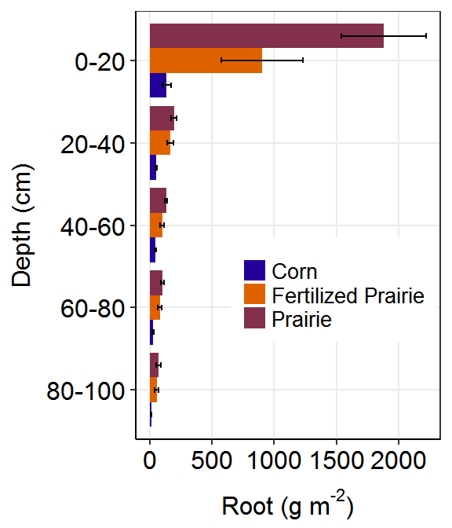
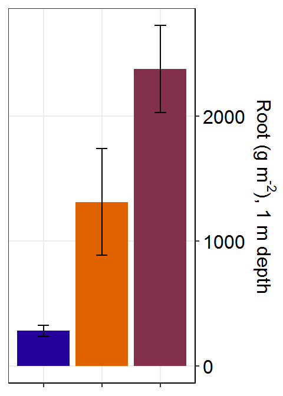

COBS Update
Ranae Dietzel
Objective of the project
Quantify the effect of depth on decomposition.
Locations and timing
Subplots were established in all prairie, fertilized prairie, and continuous corn plots during 2016.

Figure 1. Location of decomposition subplots at COBS (blue).
Figure 2. Placement of subplot within plot (left) and core (number) and sensor (S) placement within subplot (right).
Subplot establishment involved terminating all vegetation within the designated area at the peak of growth. Two soil cores (5 cm diam x 1 m depth) were extracted from each subplot shortly after vegetation termination (2017-8-15).
Your turn

Data collected and to be collected
Root pool mass and C/N content
The purpose of terminating vegetation was to create an undisturbed pool of (dead) organic matter that would begin to decompose. Decomposition will be tracked by measuring changes in the mass of this root organic matter pool over time. Soil cores collected in August were used to determine initial organic matter mass values.
Soil C, N, and POM
Root-free soil was subsampled from these cores, has been air-dried, and awaits analysis.
Subplot soil moisture and temperature
Each subplot has soil temperature and moisture sensors at 7.5, 25, 45, and 70 cm. Measurements are logged every hour.
Brief summary of the recent results
 